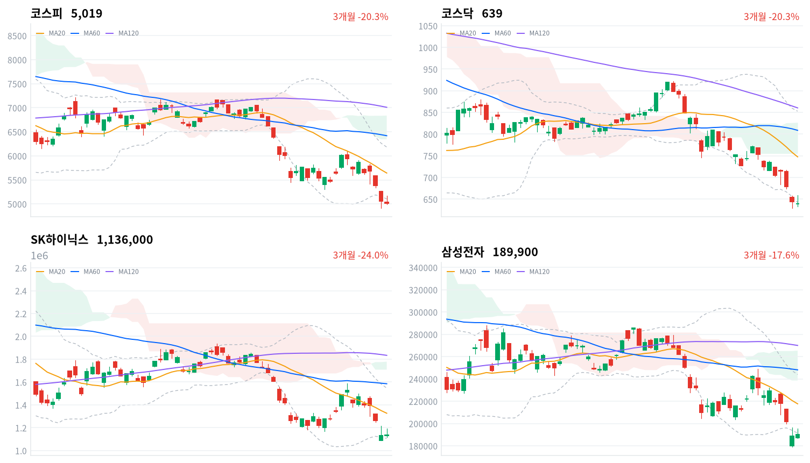

미국 반도체 반등에 대만가권이 4.94% 오른 날 코스피는 장중 5,173까지 올랐다가 0.81% 내린 5,018.85로 마감했다. 외국인은 6,229억원을 순매도해(당일 잠정) 7거래일 연속 팔았고, 2차전지·자동차·증권이 크게 내렸다.
반등 시도가 종가로 지켜지지 않아 매도가 끝났다고 보기는 이르다. 11월 10일 외국인 순매수 방향과 코스피가 11월 9일 기준 볼린저 밴드 하단 5,103 위로 돌아오는지를 기다린다.
11월 6일 미국 세션의 반도체 반등이 대만과 일본에는 옮겨 갔지만 한국에는 거의 옮겨 오지 않았다. 대만가권이 4.94%, 닛케이가 2.33% 오르는 동안 코스피는 아시아 네 지수 평균보다 2.68%포인트 뒤졌다. 외국인은 코스피에서 6,229억원을 순매도해(당일 잠정) 7거래일 연속 팔았고, 기관이 7,092억원을 샀다.
장 마감 뒤 보도는 이날 하락을 2차전지 차익실현 매물과 업종별 차별화, 외국인 매도로 설명했다. 매도가 반도체 밖 업종에 몰렸다는 데는 동의한다. 다만 그 설명은 반도체 대형주마저 미국 반등을 거의 따라가지 못한 이유를 답하지 않는다. 필라델피아 반도체지수가 4.20% 올랐다는 보도가 나온 날 SK하이닉스는 0.35%, 삼성전자는 0.64% 오르는 데 그쳤다. 키움증권 전략 보고서를 두고는 지금의 지수대에서 추가 매도의 실익이 크지 않아 반등 확률이 높아졌다는 의견도 나왔다. 이날 장중 반등은 그 의견과 같은 방향으로 시작했지만 오후에 모두 반납됐다.
대만 상승은 TSMC 비중이 큰 지수 구성 때문이고, 코스피가 뒤진 것은 11월 4일 급등한 2차전지·자동차의 차익실현이라는 업종 고유 요인일 수도 있다. 그러나 미국 반등의 직접 수혜 업종인 한국 반도체 대형주도 거의 오르지 않았고, 외국인 매도는 일곱 세션째 이어졌다. 그래서 한국 고유의 위험 축소가 아직 끝나지 않았고 반등이 종가로 지켜지지 않는다고 본다. 대만 상승의 원인은 확인하지 못해 지수 구성 차이를 배제하지는 못한다. 두 설명은 11월 10일 외국인 순매수 방향과 코스피가 밴드 하단 안으로 돌아오는지로 구분된다.
새로 제안할 상품은 없다. 반도체·AI 하드웨어 테마에서 미국 반등이 한국 대형주로 옮겨 오지 않은 것은 한국 쪽 근거를 강하게 하지 못했고, 2차전지·ESS 투자 테마는 회사 고유 악재 없이 하루에 5% 넘게 빠져 가격 근거가 약해졌다. 장중 2% 넘는 반등을 오후에 모두 내준 하루만으로 바닥을 판단하기는 이르다. 가장 가까운 결정적 일정은 11월 10일 정규장의 외국인 코스피 순매수 방향과 종가다.
코스피가 11월 9일 기준 볼린저 밴드 하단 5,103 위에서 마감하면, 외국인 매도가 이어지는 동안 반등이 종가로 지켜지지 않는다는 오늘 판단을 철회한다. 그 경우 이날 장중 반등을 매도 소진의 시작으로 보는 설명을 우선 설명으로 본다. 반대로 20일 저점 4,911을 종가로 내주면 판단을 뒷받침한다.
출처: 이투데이, 이뉴스투데이, 서울신문, 미디어펜
11월 6일 미국 세션에서 나스닥은 1.09%, S&P500은 0.31% 올랐고 다우는 0.46% 내렸다. 필라델피아 반도체지수가 엔비디아·AMD·마이크론 강세로 4.20% 급등했다는 보도가 나왔다. 아시아에서는 대만가권(+4.94%)과 닛케이(+2.33%)가 크게 오르고 상해종합(+0.32%)은 소폭 올랐으며 항셍(-0.13%)은 보합권이었다. 코스피만 내려 네 지수 평균보다 2.68%포인트 뒤졌다.
코스피는 전일 종가 5,060보다 0.50% 낮은 5,034에서 출발했다. 한국 정규장 동안 미국 선물은 S&P500 선물·나스닥 선물이 각각 0.25% 올라, 한국 장중에 미국 쪽 새 악재는 더해지지 않았다.
코스피는 장 초반 4,991까지 밀렸다가 오전 중 5,173까지 2.24% 올랐고, 오후에 상승분을 모두 내줘 하루 범위의 아래쪽 15% 지점에서 마감했다. 코스닥도 633~659 범위의 아래쪽 4분의 1에서 끝났다. 원화는 장중 강해지는 쪽으로 움직였다.
미국 반도체 반등이 한국 반도체 대형주의 소폭 상승에 그치고, 매도는 2차전지·자동차·증권·방산·조선에 몰린 날이다. 외국인이 팔고 기관이 받았다. 장중 투자자별 흐름 자료가 없어 오후 되밀림을 어느 주체가 만들었는지는 알 수 없고, 시간외 거래 자료도 없다.
출처: 이투데이, 미디어펜
두 지수가 같은 폭으로 내렸다. 코스피는 0.81% 내린 5,019, 코스닥은 0.82% 내린 638.97로 마감했다. 코스피 종가는 2월 2일(4,950) 이후 가장 낮다는 보도가 나왔다.
| 지수 | 종가 | 등락률 | 시가 | 고가 | 저가 | 전일 종가 |
|---|---|---|---|---|---|---|
| 코스피 | 5,018.85 | -0.81% | 5,034.20 | 5,172.94 | 4,990.66 | 5,059.69 |
| 코스닥 | 638.97 | -0.82% | 638.82 | 658.66 | 632.70 | 644.27 |
코스피는 오전 고점에서 11월 6일 기준 볼린저 밴드 하단(5,159)을 잠시 넘었지만 오후 2시 30분 이후 낙폭을 키워 마감 직전까지 밀렸다. 고점에서 종가까지 154포인트를 내줘, 종가는 장 초반 저점과 30포인트 안쪽 차이였다.
출처: 미디어펜
| 주체 | 순매수(억원) |
|---|---|
| 개인 | -5,486 |
| 외국인 | -6,229 |
| 기관 | +7,092 |
| 주체 | 순매수(억원) |
|---|---|
| 개인 | -510 |
| 외국인 | -629 |
| 기관 | +1,070 |
외국인 매도는 크게 줄었지만 멈추지 않았다. 외국인은 코스피에서 6,229억원을 순매도해(전일 2조6,892억원 순매도, 당일 잠정) 7거래일 연속 팔았고, 일곱 세션 합계는 12조6,462억원이다. 기관은 7,092억원(전일 1조7,092억원)을 순매수했고, 개인은 5,486억원을 순매도해(전일 5,207억원 순매수) 판 쪽으로 돌아섰다. 지수가 0.81% 내리는 데 그친 것은 외국인 매도 규모가 전날의 4분의 1로 줄어든 것과 같은 방향이다.
코스닥에서도 기관이 1,070억원을 사고 외국인(629억원)과 개인(510억원)이 팔아, 두 시장의 주체별 방향이 같았다. 전일 값은 이날 다시 받은 잠정치라 지난 글의 값과 다르다.
장중 누적 수급과 프로그램 매매는 받을 수 있는 자료가 없어 싣지 않는다.
| 순위 | 종목/ETF | 구분 | 거래대금 | 비고 |
|---|---|---|---|---|
| 1 | SK하이닉스 | 개별주 | 4.89조원 | - |
| 2 | 삼성전자 | 개별주 | 3.69조원 | - |
| 3 | 반도체 테마 ETF | 테마·롱 | 1.80조원 | 29종 합산 |
| 4 | 삼성전기 | 개별주 | 0.74조원 | - |
| 5 | SK스퀘어 | 개별주 | 0.57조원 | - |
| 6 | 삼성SDI | 개별주 | 0.52조원 | - |
| 7 | KODEX CD금리액티브(합성) | 단기금리·현금성 | 0.45조원 | - |
| 8 | 삼성전자우 | 개별주 | 0.43조원 | - |
| 9 | 2차전지 테마 ETF | 테마·롱 | 0.38조원 | 14종 합산 |
| 10 | SK하이닉스 레버리지 | 단일종목·롱 | 0.20조원 | 5종 합산 |
단위 백만원 원본을 조 단위로 환산했다. 같은 기초자산 ETF는 방향별로, 같은 테마 섹터 ETF는 테마별로 묶고 지수·해외 ETF는 제외했다.
거래는 여전히 반도체 두 종목에 몰렸지만 규모는 전날보다 줄었다. SK하이닉스(4.89조원)와 삼성전자(3.69조원)가 상위 10개 합계의 60%를 넘었고, 반도체 테마 ETF 29종 합산(1.80조원)이 3위였다. 거래가 가장 몰린 두 종목의 주가는 1% 안쪽으로 오르는 데 그쳤다.
2차전지에서는 거래와 하락이 함께 컸다. 삼성SDI가 11% 넘게 떨어지며 0.52조원이 거래돼 6위에 올랐고, 2차전지 테마 ETF 14종 합산도 0.38조원으로 상위 10개에 들었다.
오른 섹터는 반도체 하나였다. 대표 ETF 기준 12개 섹터 가운데 반도체(+1.85%)만 올랐고, 2차전지(-5.33%)·자동차(-4.14%)·증권(-3.99%)·방산(-3.56%)·조선(-3.45%)이 크게 내렸다. 1주 기준으로는 반도체(-20.68%)가 여전히 가장 약하고 소프트웨어(+5.62%)만 올라, 하루 반등이 한 주 낙폭을 되돌리기에는 작다.
업종 단위에서는 오른 쪽이 넓게 올랐다. 통신장비(+4.89%)는 55종목 가운데 33종목, 항공사(+3.68%)는 9종목 가운데 7종목이 올랐고, 소프트웨어(+2.26%)도 76종목 가운데 35종목이 함께 올랐다. 반도체와반도체장비 업종은 173종목 가운데 119종목이 올랐지만 업종 등락률은 -0.01%로 보합이어서, 오른 종목 수에 비해 오름폭은 작았다.
반도체 대형주는 미국 반등에 비해 소폭 오르는 데 그쳤다(삼성전자 +0.64%, SK하이닉스 +0.35%). 미국 11월 6일 세션의 필라델피아 반도체지수 급등이 배경이었다는 보도가 나왔다. SK증권 한동희 연구원을 두고는 삼성전자와 SK하이닉스의 12개월 선행 P/E가 낮아 시장이 메모리 실적 전망 자체를 신뢰하지 않는 것이고 현재 주가는 다운턴 하단에 가깝다는 의견도 나왔다.
2차전지 대형주가 크게 내렸다(삼성SDI -11.32%, LG에너지솔루션 -5.78%). 삼성SDI는 최근 일주일 주요 공시나 악재가 없었고, 차익실현 매물과 외국인 매도 속 업종 약세가 하락 이유로 보도됐다. 삼성SDI 종가 415,000원은 11월 4일 545,000원보다 23.85% 낮다.
한진칼은 경영권 지분 경쟁 기대로 올랐다(한진칼 +5.81%). 호반건설이 11월 4일 조원태 회장 측 지분(20.58%)을 0.11%포인트 웃돌아 최대주주가 됐고, 조 회장이 370억5000만원어치 지분을 추가로 사겠다고 밝혔다는 보도가 나왔다. 한진칼우는 3거래일 연속 상한가였다.
대덕전자가 올랐다(대덕전자 +5.62%). 확인된 재료는 없다.
한화솔루션이 내렸다(한화솔루션 -6.91%). 확인된 재료는 없고, 11월 4일 급등 뒤 되돌림이 이어졌다.
묶음 밖에서는 아시아나IDT(+29.99%)가 상한가로 마감했지만 확인된 재료는 없다. 방산의 LIG디펜스앤에어로스페이스(-8.90%)와 조선의 삼성중공업(-5.43%)도 크게 내렸다. 한화오션은 장중 보도 시세로 46,000원대에서 거래돼 약세였고, 장 마감 뒤 중국이 한화오션 미국 자회사 5곳 제재 유예를 2개월 연장했다는 보도가 나왔다. 이 소식은 이날 주가에 반영되지 않았다.
출처: 이투데이, 재경일보, 비즈니스포스트, 글로벌이코노믹, 아주경제, 뉴스핌, CBC뉴스, 파이낸셜뉴스
주식이 내린 날 국고채 금리는 소폭 올랐고, 원화는 장중 강해졌다. 국고채 3년물은 2.6bp 오른 3.639%, 10년물은 1.0bp 오른 3.863%로 마감했다. 원/달러는 한국장 시간대 장 초반 1,363원에서 마감 무렵 1,346원까지 내렸고, 마지막 관측은 1,347원이었다(서울 외환시장 공식 종가 아님).
| 지표 | 금리 | 전일比(bp) | 기준일 |
|---|---|---|---|
| 국고채 3년 | 3.639% | +2.6 | 2026-11-09 |
| 국고채 10년 | 3.863% | +1.0 | 2026-11-09 |
| CD 91일 | 3.36% | +2.0 | 2026-11-09 |
| 회사채 AA- 3년 | 4.332% | +1.9 | 2026-11-09 |
| 한국은행 기준금리 | 3.00% | 0.0 | 2026년 10월 기준 |
단기 금리가 더 올라 커브는 조금 평탄해졌다. 10년물과 3년물의 금리차는 22.4bp로 1.6bp 좁혀졌고, 최근 2년(531거래일) 가운데 좁은 쪽 21% 안에 있다. 회사채 AA- 3년물과 국고채 3년물의 금리차는 69.3bp로 0.7bp 좁혀졌지만, 최근 2년(531거래일) 가운데 이보다 넓었던 날이 32일뿐이라 신용 위험에 매겨진 값은 여전히 높다. 3년물은 기준금리(3.00%, 10월 기준)보다 63.9bp 위에 있다.
| 미국 참조 지수 | 구분 | 관측 | 등락률 | 업종 내 상승 비율 | 기준일 |
|---|---|---|---|---|---|
| 반도체·AI 하드웨어 | 업종 | 반도체와반도체장비 | -0.01% | 69% | 11/9 |
| 반도체·AI 하드웨어 | 종목 | SK하이닉스 | +0.35% | – | 11/9 |
| 반도체·AI 하드웨어 | 종목 | 삼성전자 | +0.64% | – | 11/9 |
| 반도체·AI 하드웨어 | 지수 | 대만가권 | +4.94% | – | 11/9 |
| 전력망 | 종목 | HD현대일렉트릭 | -2.86% | – | 11/9 |
| 전력망 | 종목 | LS ELECTRIC | -4.12% | – | 11/9 |
| 전력망 | 종목 | 효성중공업 | -1.78% | – | 11/9 |
| 방산 | 종목 | 한화에어로스페이스 | -3.18% | – | 11/9 |
| 방산 | 종목 | LIG디펜스앤에어로스페이스 | -8.90% | – | 11/9 |
| 산업재 | 종목 | HD현대중공업 | -1.90% | – | 11/9 |
| 산업재 | 종목 | 삼성중공업 | -5.43% | – | 11/9 |
| 금속·광업 | 업종 | 철강 | -1.77% | 31% | 11/9 |
| 금속·광업 | 업종 | 비철금속 | -2.17% | 32% | 11/9 |
| 금속·광업 | 종목 | POSCO홀딩스 | -2.26% | – | 11/9 |
| 금융 | 업종 | 은행 | -0.55% | 18% | 11/9 |
| 금융 | 종목 | KB금융 | -0.07% | – | 11/9 |
| 금융 | 종목 | 신한지주 | -1.04% | – | 11/9 |
| 소프트웨어 | 업종 | 소프트웨어 | +2.26% | 46% | 11/9 |
| 소프트웨어 | 업종 | IT서비스 | +0.36% | 46% | 11/9 |
| 소프트웨어 | 종목 | NAVER | -1.63% | – | 11/9 |
| 소프트웨어 | 종목 | 카카오 | -0.62% | – | 11/9 |
| 에너지 | 업종 | 석유와가스 | +0.22% | 37% | 11/9 |
| 에너지 | 종목 | SK이노베이션 | -2.47% | – | 11/9 |
| 일본 | 지수 | 닛케이 | +2.33% | – | 11/9 |
| 중국 | 지수 | 항셍 | -0.13% | – | 11/9 |
| 중국 | 지수 | 상해종합 | +0.32% | – | 11/9 |
해외주식 펀드의 대기 자금이 달러를 사는 비용은 이날 장 초반보다 낮아졌다. 원/달러가 한국장 시간대 고점 1,363원(09:00)에서 마지막 관측 1,347원까지 내려, 외국인 순매도가 이어진 날에도 원화는 강해졌다. 원화 강세는 이미 보유한 해외주식의 원화 환산 가치를 낮추는 방향이다.
반도체·AI 하드웨어 테마에서 미국 반등은 대만에는 옮겨 갔지만 한국에는 거의 옮겨 오지 않았다. 대만가권이 4.94% 오르는 동안 SK하이닉스는 0.35%, 삼성전자는 0.64% 올랐고 반도체와반도체장비 업종은 -0.01%로 보합이었다. 같은 미국 재료에 두 시장이 다르게 반응해, 한국 메모리 대형주를 누른 것은 미국 반도체 전체의 방향보다 한국 쪽 요인이라고 본다. 미국 정규장에서 메모리 종목이 반도체지수와 함께 움직이는지가 이 차이를 한국 고유 요인으로 볼지 정한다.
정부는 11월 6일 긴급 시장상황점검회의에서 증권사의 신용융자 담보비율 유지의무를 2027년 1월 31일까지 한시 면제했다. 11월 9일에는 대신증권 노조가 이 조치로 증권사 부실 위험이 커진다며 대책을 촉구했다는 보도가 나왔다.
담보비율이 기준 밑으로 떨어진 신용 계좌를 증권사가 강제로 정리하지 않아도 되니, 개인 신용 비중이 높은 종목의 반대매매 매도는 뒤로 밀린다. 대신 주가가 더 내리면 담보 부족 손실을 증권사가 떠안는다. 이날 증권 섹터가 크게 내린 것은 이 부담과 방향이 같지만, 둘을 잇는 자료는 아직 없다. 다음 확인은 금융당국의 후속 보완책과 증권사 신용융자 잔고 추이이며, 보완책 발표 일정은 미확정이다.
11월 9일 국회 산자위 예산심의에서 2030년까지 6조원을 지원하는 호남(서남권) 반도체 클러스터 통합재정지원 사업을 두고 여야가 맞섰고, 야당은 기금 운용계획 초안이 제출되지 않았다고 지적했다. 같은 자리에서 김정관 산업통상부 장관은 미·중 경쟁을 고려하면 AI 투자는 구조적으로 확대되고 지금이 투자 적기라고 말했다.
클러스터 지원은 장기 설비 투자 비용을 낮춰 이익에 닿는 정책이라 당장 주가를 움직일 힘은 약하다. 장관 발언도 미국 중간선거 뒤 커진 AI 인프라 투자 위축 우려를 바라보는 정부 시각에 그치고, 새 정책 조치는 없었다. 미국 데이터센터 규제의 구체적인 법안이나 행정조치는 이날도 확인되지 않았다. 예산 소위 의결 일정은 미확정이다.
제3차 ESS 중앙계약시장에 LG에너지솔루션이 불참해 삼성SDI와 SK온의 2파전이 됐다는 보도가 나왔다. 낙찰은 ESS 수주 물량과 이익 전망을 바꾸는 실제 재료라, 11월 4일 정책 기대로 오른 2차전지가 기대만으로 버틸지 이익으로 뒷받침될지를 가른다. 이날 삼성SDI 급락의 원인으로 이 보도를 특정한 기사는 없고, 결과 발표 일정은 확인하지 못했다.
정부가 11월 5일 가상자산 과세를 2029년까지 2년 더 미루기로 했지만, 비트코인은 11월 9일 오전 1억239만6000원으로 한 달 새 9.56% 내린 수준에 머물렀다는 보도가 나왔다. 과세 유예는 개인의 위험자산 심리를 통해서만 주식에 닿아 직접 수혜 업종은 좁다. 다음 분기점은 국회의 소득세법 개정이며 일정은 미확정이다.
출처: 디지털데일리, 연합뉴스, 연합뉴스TV, 머니투데이, 머니S, 네이버 뉴스
11월 6일 판단은 유효하다. 코스피가 11월 6일 기준 볼린저 밴드 하단 5,159 위에서 마감하지 못하고 5,018.85로 끝나, 외국인 매도가 이어지는 동안 국내 매수가 하단을 만들지 못한다는 판단을 유지한다. 장중에는 5,173까지 올라 기준을 넘었지만 종가로 지키지 못했다. 기다린 조건 가운데 외국인 방향은 6,229억원 순매도(당일 잠정)로 판단과 같은 쪽이었고, 코스피는 11월 6일 장중 저점 4,911 위에서 마감해 하단을 새로 내주지는 않았다. 다만 하단이 무너진다는 쪽의 근거도 이날 생기지 않았다.
| 판단(세운 날) | 오늘 결과 | 상태 |
|---|---|---|
| 조선 반등은 낙폭 과대 되돌림(11월 2일) | 한화오션 종가 미확인, 장중 차 양쪽 걸침 | 판단 보류 — 11월 9일로 닫음 |
| 정유주 급락은 협상 타결 기대의 선반영(11월 3일) | S-Oil 비교값 없음(거래대금 상위 밖) | 판단 보류 — 11월 10일 종가 |
| 친환경주 급등은 하루 테마 매수(11월 4일) | 한화솔루션−코스피 -1.69%포인트 | 판단 보류 — 11월 11일 종가 |
| 삼성전기 급락은 부품 체인 위험 축소의 과잉(11월 5일) | 삼성전기−코스피 -3.92%포인트 | 약화 — 11월 12일 종가 |
| 전력기기 급락은 위험 축소의 과잉(11월 6일) | 효성중공업−코스피 -0.97%포인트 | 판단 보류 — 11월 13일 종가 |
| 2차전지 급락은 정책 기대 매수의 청산(11월 9일) | 삼성SDI 415,000원(-11.32%) | 새로 세움 — 11월 16일 종가 |
조선 판단(11월 2일)은 판정일인 이날 종가 비교값이 없어 어느 쪽으로도 판단하지 않고 닫았다. 한화오션 종가는 확인하지 못했다. 보도된 장중 가격(45,300~48,500원)으로 11월 2일 종가 54,900원 대비 수익률을 잡으면 코스피(-14.34%)와 차이가 -3.15%포인트에서 +2.68%포인트까지여서 기준(-3%포인트)의 양쪽에 걸친다. 새 수주·선가 자료는 판정일까지 나오지 않았다.
삼성전기 판단(11월 5일)은 약해졌다. 11월 5일 KRX 종가 대비 삼성전기는 10.70% 내려 코스피(-6.78%)보다 3.92%포인트 약했고, 이익 재평가 쪽 기준(-3%포인트)을 넘었다. 판정일은 11월 12일이고 회사 고유의 악재는 여전히 확인되지 않았다. 친환경주 판단(11월 4일)은 11월 6일의 +4.02%포인트 우위가 사라져 차이가 ±3%포인트 안으로 들어왔다.
2차전지 판단(11월 9일)은 오늘 세웠다. 출발점은 11월 9일 KRX 종가 삼성SDI 415,000원, 코스피 5,018.85다. 11월 9일 KRX 종가 대비 11월 16일 KRX 종가 기준 삼성SDI 수익률이 코스피 수익률보다 3%포인트 넘게 낮으면 기대 매수 청산 해석을 뒷받침한다. 같은 폭 넘게 높으면 낙폭 과대 되돌림을 더 설득력 있는 설명으로 보고 이 판단을 철회하며, 차이가 그 범위 안이면 어느 쪽으로도 판단하지 않고 닫는다. 그 사이 ESS 중앙계약시장 낙찰 결과가 나오면 이익 재료가 생겨 청산 해석만으로 결과를 읽기 어려워진다.
| 항목 | 계산 | 결과 |
|---|---|---|
| 코스피(11월 2일→11월 9일 종가) | (5,018.85 ÷ 5,859.08 − 1) × 100 | −14.34% |
| 한화솔루션 − 코스피(11월 4일→11월 9일 종가) | (24,250 ÷ 28,000 − 5,018.85 ÷ 5,683.80) × 100 | −1.69%포인트 |
| 삼성전기 − 코스피(11월 5일→11월 9일 종가) | (843,000 ÷ 944,000 − 5,018.85 ÷ 5,383.80) × 100 | −3.92%포인트 |
| 효성중공업 − 코스피(11월 6일→11월 9일 종가) | (1,549,000 ÷ 1,577,000 − 5,018.85 ÷ 5,059.69) × 100 | −0.97%포인트 |
| 시점 | 확인할 것 | 가르는 판단 |
|---|---|---|
| 11월 10일 종가 | 외국인 방향·코스피 5,103 회복, S-Oil−코스피 차 | 반등 불발인가, 협상 기대 선반영인가 |
| 11월 11일 종가 | 한화솔루션−코스피 수익률 차(11월 4일 대비) | 테마 매수인가, 실적 재평가인가 |
| 11월 12일 종가 | 삼성전기−코스피 수익률 차(11월 5일 대비) | 부품주 과잉 매도인가 |
| 11월 13일 종가 | 효성중공업−코스피 수익률 차(11월 6일 대비) | 전력기기 과잉 매도인가, 수주 재평가인가 |
| 11월 16일 종가 | 삼성SDI−코스피 수익률 차(11월 9일 대비) | 기대 매수 청산인가, 낙폭 과대인가 |
| 일정 미확정 | ESS 제3차 중앙계약시장 낙찰 결과 | 2차전지에 이익 재료가 생기는가 |
신용융자 담보 규제 후속 보완책과 반도체 클러스터 예산 소위 의결도 일정이 확정되지 않았다.

코스피·코스닥·SK하이닉스·삼성전자 3개월 일봉에 이동평균(20·60·120)·볼린저밴드·일목균형표 구름대를 겹쳐 그렸다. 상승 캔들은 녹색, 하락 캔들은 적색이다.
| 자산 | 위치(이평·구름) | 가까운 저항 | 가까운 지지 |
|---|---|---|---|
| 코스피 | 볼린저 하단·세 이동평균·구름 아래(역배열) | 볼린저 하단 5,103 → 전환선 5,506 | 20일 저점 4,911 |
| 코스닥 | 볼린저 하단·세 이동평균·구름 아래(역배열) | 볼린저 하단 642 → 전환선 701 | 20일 저점 629 |
| SK하이닉스 | 세 이동평균·구름 아래(역배열) | 없음 | 볼린저 하단 111만원 → 20일 저점 109만원 |
| 삼성전자 | 볼린저 하단·세 이동평균·구름 아래(역배열) | 볼린저 하단 19만1천원 | 20일 저점 17만9천원 |
코스피는 2거래일째 볼린저 밴드 하단 아래에서 마감했고, 세 이동평균과 구름 아래 역배열에 머물렀다. 위로는 밴드 하단 5,103을 종가로 되찾는지가 첫 관문이고, 아래로는 11월 6일 장중 저점이자 20일 저점인 4,911이 가장 가까운 지지다. 삼성전자는 밴드 하단(19만1천원) 바로 아래에서 끝났고, SK하이닉스는 하단(111만원) 위를 지켰다.
위 레벨은 이동평균·볼린저밴드·일목균형표와 스윙 고저를 11월 9일 종가로 기계적으로 계산한 값이며 투자 권유가 아니다. 종가에서 10% 넘게 떨어진 레벨은 싣지 않았다.